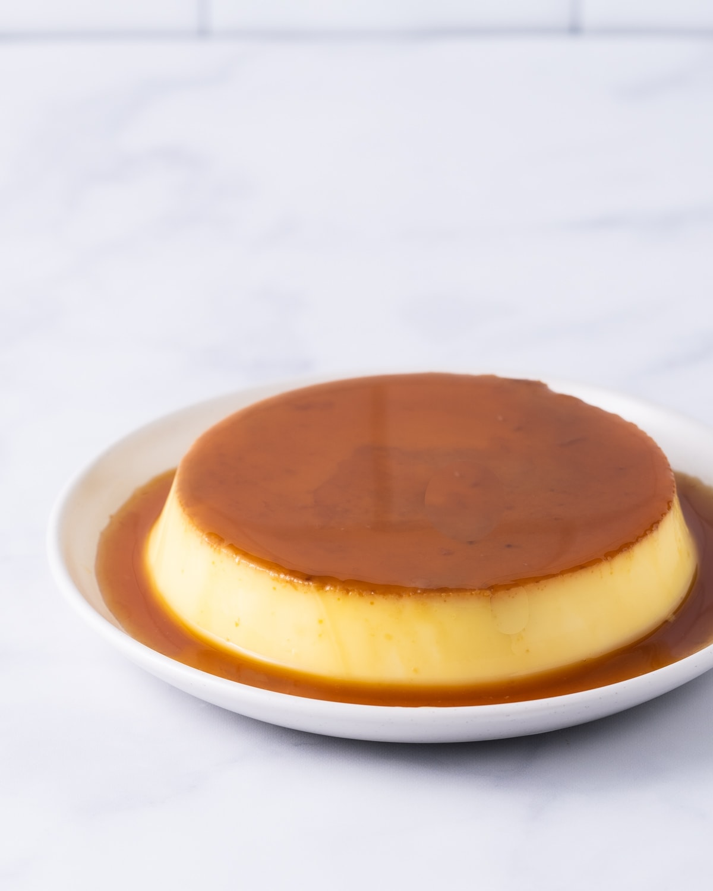

Bánh Flan
Vietnamese Flan Creme Caramel

Equipment
- 8 (6 oz) ramekins or
- 2 (4 cup) Pyrex containers
- Fine mesh sieve
- Mixing bowl
Ingredients
For the Caramel Syrup
- ½ cup sugar
- 1 tablespoon instant espresso coffee powder + 1 tablespoon water (optional)
For the Flan
- 2 cups whole milk
- 6 large eggs (3 whole and 3 yolks)
- ¾ cup sugar (or condensed milk)
- 1 teaspoon vanilla extract
Instructions
Preheat
Preheat your oven to 300°F. Bring water to a boil to use as a water bath. (Optional: If you are using instant coffee to flavor the caramel sauce, mix together the coffee and water in a small bowl.)
Make the Caramel Syrup
- In a small, heavy frying pan, pour in sugar and spread it evenly around the pan. Heat the sugar over medium-low heat until it begins to liquefy. Shake the pan slightly, but do not stir, until the sugar has melted, about 10 minutes. Stir the sugar as it begins to bubble and take on color. If using coffee, stir it in now.
- Let it cook to an amber color. When the sugar becomes amber, turn off the heat and quickly pour the caramel into the bottom of an 8-cup (or two 4-cup) baking dish or 8 individual ramekins. Carefully tilt in a circular motion to coat the entire surface of the baking dish.
Make the Custard
- Add milk and sugar to a heavy saucepan over medium-low heat. Do not let the milk boil or bubble; keep it warm enough to dissolve all the sugar (about 130-140°F). Let it cool for about 5 minutes.
- In a separate bowl, whisk the eggs, yolks, and vanilla extract together. Slowly mix in 1 cup of milk at a time. Gently mix until everything is well combined. (Note: Pouring too much all at once might scramble the eggs. Tempering the eggs will help make the flan creamy, smooth, and velvety.)
- Pour custard through a sieve over the caramel. To get rid of air bubbles, strain the flan mixture through a fine mesh sieve and pour it into the prepared baking dish or ramekins on top of the caramel layer.
Steam the Flan
- Cover the baking dish or ramekins with aluminum foil and poke a few holes through the foil.
-
Oven method: Put the baking dish or ramekins onto a baking tray and fill the tray halfway with boiling water. Bake for 50-70 minutes, or until the custard is set and a knife comes out clean; cooking time will vary with the depth of the mold.
-
Instant Pot method: Fill the instant pot with 1 cup of cold water. Set the ramekins in (you may need to work in batches). Set the instant pot to [Pressure Cook/Manual] on high pressure for 12 minutes + Natural Release; cooking time will vary with the depth of the mold.
Let it Cool
Once it is done baking, set it aside to cool completely. Then, take the foil off and wrap it with plastic wrap. Let it set in the refrigerator for at least 4-6 hours or overnight.
Invert onto Serving Dish
Once chilled, run a sharp knife around the edges of the ramekins or baking dish, then place a large-rimmed serving plate over the pan. While holding the plate in place, flip the flan to the opposite side and let it fall onto the plate. If the caramel on the bottom of the pan has hardened, place it in a pan of hot water to loosen.
Slice and Serve
Slice the flan and serve.
Notes
- Watch the sugar closely: Caramel goes from great to burnt in a matter of seconds.
- Pour the caramel into the molds quickly: The caramel will harden within a few minutes. Have the molds prepped and ready so that you can quickly pour the caramel in and swirl it around to cover the bottom of the molds.
- Taste test the milk and sugar mixture: Pour the sugar in slowly and taste test the mixture to see if it is to your desired sweetness.
- Temper the eggs: Add warm milk into the eggs 1/2 cup at a time. (Pouring too much all at once might scramble the eggs). Tempering the eggs will help make the flan creamy, smooth, and velvety.
- Do not overmix: This will cause air bubbles in the flan.
- Strain the flan mixture through a fine mesh sieve: This gets rid of air bubbles and egg clumps so that your flan is silky smooth.
- Check for doneness with a toothpick or thin knife: Insert a toothpick or a thin knife into the center of the flan. The flan is done if it comes out mostly clean or with a few small, cooked custard bits attached. However, if the toothpick comes out wet and covered in liquid custard, it needs more baking time.